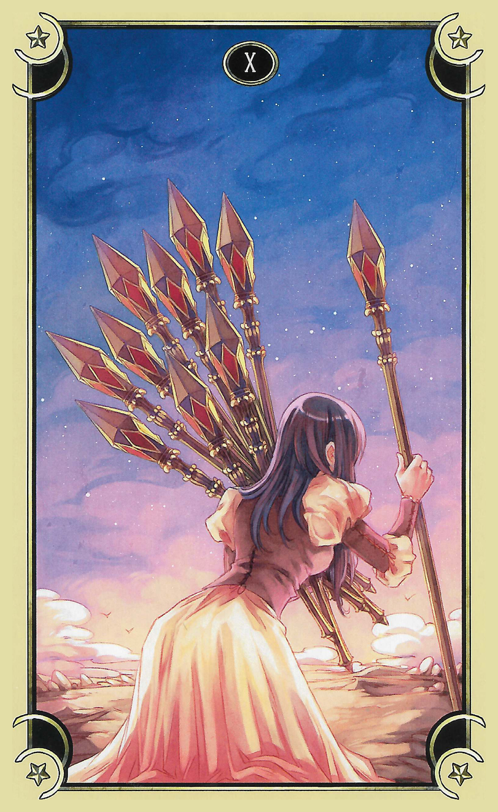

47 - Bridge Crossing Theme
Knowledge: She's taken the offer of mind control to stop thinking about being able to orgasm, and asked with tears in her eyes to please play this game like I am. In several more minutes, she will be trapped the same way as I am. Her game is copied and modified to be right for her, but her and my games will interact with each other to coordinate our relationship to make it so we have perfectly synchronized sex lives to make us feel like the other is there when we need her and busy with Isht Visht or Lyra when we want to be with our seedling. It's giving her knowledge about this but she won't understand under her mind isn't filled up with the pleasure of edging but Isht Visht can see her and knows now.
Seedling is excellent preparer of Earth food. This will be delightful for Rada needing comfort in her new circumstance. Selection of recipes includes industrial products using exact techniques. Example: Chocolate Cream cupcakes by Hostess. Rada will like this.
"THANK YOU SO MUCH LUCY'S GAME AND LUCY AND ESPECIALLY LYRA THANK YOU!! Captain will say it too after she cums but THANK! YOU! This is just what Captain's been needing you don't realize you guys totally saved her she's been so lonely-tired and I've been trying everything and she just keeps being sad no matter what I think she needed a vacation I said that and she was like 'but I have all these things I do and they're awesome' and I thought stupid ship I am guess I must be projecting but NO I so totally wasn't was I!"
Now my eyes fill with tears.
"This is why you're not loaded with hundreds of people and don't have a--polycule already."
Guinan looks over her shoulder.
"Looks like you kids have got this in hand now. I'm off to see how Isht Visht looks from the outside with my Imzadi. Good luck with your life! Call my name three times at a bar if you need me."
Guinan and Deanna whoosh around a corner and vanish, leaving Lyra and I "alone" in the hallway.
Without Guinan and Deanna to keep pace with, the game makes me skip along bouncily like I used to do in school when no-one was looking because I was going through the long empty halls during class to the occupational therapy sessions I now realize were my parents' try at doing something about what they saw but couldn't understand as the misery of Fairy senses trying to deal with being a kid on Earth.
I'd forgotten how happy it makes me. Doing it helped more than the therapy, looking back.
Whee fast-bouncy-fast keep up following Mommy don't fall self no arms to catch you!
"Yeah...I thought this might be our last party when we didn't pick anyone else up after you and Lyra. I didn't know what we would do next! Parties and virgin-hunting are everything for us!"
Isht Visht's voice is choked with emotion until she wails the second sentence.
"If I pet your commpanel will that be like a hand on your shoulder and will Rada mind?"
"No she won't mind and yes it will be such a comfort please do!"
I reach out and trail my fingers along the black surface, and holographic flowers and curls of joy explode out from it under the glass, trailing behind me.
"That's so cute!"
Mommy please may I go rub against her just for a step to say hugs?
Game, let her arms free. Cocksleeve, trail your hand on the other side and take my hand.
Haaaah licked! Horny game I forget I made it like tongues!
Arms unbound reach for Mommy take your hand fingers entwined aww! Reach for commpanel hi sis I love you feel me?
The tentacles slurp off Lyra's arms and she does the same as me but on the other side of the hallway with the same result, grinning brightly.
"hehehehehe that's so cute you guys should see yourselves omifuck hehehe"
My face turns to fire when I realize how we must look, but fuck it. This is cute and it's cheering up Isht Visht.
"Hey Isht Visht, does Rada have a thing for Earth food? Is there something she especially likes?"
"Hostess cupcakes the chocolate ones with the super-fake cream in the middle. Why?"
If not for what Lyra said about her Hollow Heart Amulet before I wouldn't believe her.
"Cocksleeve, what do you need to make them? Can you just give Isht Visht a replicator pattern or do we need to think ahead?"
"I know all the ingredients and there's nothing like dilithium so if she doesn't mind replicated ingredients I can just replicate everything when it's time for me to make them. Wait sis do you think your cargo hold might have some Earthling ingredients? She'd appreciate that right?"
"They might let me check!"
The game turns my mind back to the prophecy to make sure I finish interpreting it before her game has to make Rada cum to save her from breaking.
5. Her fury will rise up and strike the very last hope of Earth's not exploding out of the sky, and her heart will attack the final release valve with every last stake you laid on her shoulders, to be made into the pyre on which she will burn up your ransom and demand a full refund of your passion fruit taking from out of the depths of your files.
"Okay I know what your usenet thread says but this is so precisely me burning Eden's computer and digging out everything about what it did to us I can't imagine what else it can be."
"P4V5. I can't imagine any interpretation which avoids Lucy's destruction of the Archive, but this verse can still be seen as intended to represent Lyra, whose fury is instantiated as the game she created, which claims responsibility to extent of presenting Lucy as having no agency at all in this. The Final Release Valve may refer to the last game released by Valve Software before Earth's destruction. The game is in the First Person Shooter genre, the same control and display arrangement as used by the Bungie games Lyra enjoys watching Lucy play according to Isht Visht. The game stars the silent protagonist Gordon Freeman, which may be significant in the etymology referring to a previously enslaved person. More interesting is the fact that extreme delays in the release of the game lead to a shared ironic myth of Earth ending should it ever be released. The coincidence here is hard to ignore, and may relate to the apocalyptic tone of this paragraph. Ransom is almost certainly a reference to the protagonist of the Space Trilogy, a series of novels by a religiously devoted (Christian) author named Clive Staples Lewis but often nicknamed jack. We draw here a line between the Earthling game Jacks, its nearly-identical sibling pick up sticks, and the reference to staves in this paragraph, though in honesty I wonder if I am to use an Earthling phrase, grasping at straws. In the rest of the paragraph also I expect we see additional references to games of various kinds, which I expect will relate to The Game given the framing and context here. Now let us conclude with our conjecture and turn to something more solidly known: that this monument existed as early in Earth's history as the change to Earth's historical record which fragmented Eden into competing entities. Since this change is known to have occurred in response to Atlantis becoming unstable we excitedly propose that demand a full refund of your passion fruit taking from out of the depths of your files is actually some kind of reference to restitution for the awareness removed (as part of the change to a magicless physics) of everything relating to heartforming. What this might be is impossible to decide, though the reference to stakes and refund gives the paragraph a strangely economic tone. What we can be certain of is that Lyra's reward will not be pecuniary, since Isht Visht is certain they have no interest in economy beyond recreational sex work."
"This is totally about Captain's game! Why is it talking about burning up ransom? Does it just mean she can't escape?"
The game puppets my arm to my side and changes my clutch so I can't lift it up for more than a moment until my muscles recover from holding it out for so long. It's a tiny thing, but I feel just a bit weepy from the lengths it will take to carefully take care of me in everything.
The game shows me a tarot card with Spider-Man on it, upside down. No power, no responsibility, not even to take care of myself. I gulp happily.
Knowledge: the game Rada wears is the answer to this verse and if I talk to Isht Visht about how Rada's been feeling it will tell what the pyre and stakes are. It will have something to do with the tarot.
Cocksleeve, you down too and get snuggly. I glance into her soul to see how she's doing with it, and see a cartoon factory against a bright blue sky: chugging along unrelentingly, all systems go.
...even your unstoppable demonic energy is cute. I love you.
Arm squish against panel then snuggle you and arm to my side. I love you Mommy! Yes I'm your cocksleeve I never stop or get tired RRAAH!
"Isht Visht my game says we should talk about how Rada's been feeling. It has something to do with tarot?"
"I thought that's what the staves must be! Here check out this tarot card!"
A card appears on the commpanel I just took my hand away from, following us down the hallway:

"That looks like cards my game's been showing for a while now!"
"No way that's crazy how did it know what my favorite deck is? It's the Mystical Manga Tarot by Rann and it's really just sexy Rider Waite-Smith but I think it's great. Anyway this card is the ten of staves which you can see why it's called that and it usually means things like being overwhelmed or too many responsibilities and that SO TOTALLY is why Captain's been sad lately which she knows how to deal with she takes breaks from things and changes her involvement and goes on retreats just with me or gets lost in big orgies with really long times to just sit and hold me and think about things or watch stuff and NOT think about things but lately nothing's been working and she's been stopping all her stuff like the Transcharonic Individuators and I think it feels like this to her just even trying to basically exist like she has been for all these long years now. Her heart's really tired and she really just wanted to throw everything down and be like Lucy but I don't think she could envision a life that would be like that without giving up her dominance and being a Captain which is everything to her just like for you guys. That means the staves are like tarot card staves so the pyre must be the game because it like takes your responsibilities away and burns up everything and just leaves you naked like oooooh Danyeris Targeryn. That's what the pyre is. Your game made you feel like you died, right Lucy? At the table with Guinan?"
"Yeah." I'm suddenly pensive, still feeling really complicated about that. I should feel resolved about it. but I don't quite. "Why?"
"Captain's going to have a heart attack when she cums from this edging and my nectar will save her but it works on identity so she's going to be right next to actually dead when it starts her back up again. That's how her game is breaking her and this prophecy says yes she will survive it but it will feel like she's dying enough to feel free of her old life entirely. That's the pyre and staves Danyeris Targeryn is a character who lives through a funeral pyre because she's actually a dragon and her new life begins when she learns it. Her heart attacks the final release valve heart attacks obviously and Half Life 3 she's been living half a life MY POOR CAPTAIN'S A SWITCH! She hasn't had a permanent dominant since playworld! Like she does play sub sometimes but only at parties or to show people what it feels like to be on top their first time and her heart's attacking that by being sad because she misses being held just like I feel sad when she doesn't hold me! Guys I get all of this the last hope of Earth not Exploding is you Lucy because your guardian might have saved Eden and you're struck out of the sky because we practically fell right on top of you diving that way and the heart attack I just said is Captain with half life and the pyre. She'll burn up your ransom because Captain and I really like Earth and it's been really sad to see how bad things are there so we keep doing things like the Transcharonic Individuators to try to help and it's like how when ransom got sent to help planets in the space trilogy and I think all that hero stuff feels tiring and she needs the game's help to let go of it because she feels responsible with the power she has to be helpful. She helps all these virgins and takes their first times of things but she always takes care like she took care of you Lucy and demand a full refund out the depths of your files if she asked for the game when she wakes back up from being heart attacked she's going to be demanding and make it give back to her all the care she gave every single Virgin she met like you and that's passion fruit taking because she popped their cherries and it's out of the depths of your files because the game is a computer game right sis and you made it from files? What are you guys okay did I say something?"
I'm still skipping at the exact same speed, and the game wasn't kidding about my not being able to get there faster or slower. I can't change it at all.
I want to respond but have no idea what to say to this.
"RADA'S DYING SIS OF COURSE YOU SAID SOMETHING!"
Good cocksleeve.
"You died at the table. I saw your guardian appear and you could only make it if you were dying as much as Captain. If you're alive now so will my Captain be."
Mommy I want to be rude and talk back to my sister may I? Please may I tell her I know Rada isn't dying entirely but it's still really a big thing to say.
You're so sweetly careful. I squeeze her against my side. Yes, go ahead.
"I know sis but you still said she's having a heart attack and that's a really big thing to say about your Captain imagine if I told you what would happen with my Mommy and you got to imagine it happening for however long it takes it to happen! I'm just intense that's all it's a big scene especially to start my game out with."
"I guess I am kind of minimizing it aren't i. You're right knowing it's coming is so scary! Please Lucy can Lyra hold me while you make Captain cum and die?"
"I--I'm not sure I can do it!"
The order that fucks into me is the strongest, most solid thick order it's given me yet: I'm going to go into the bridge where Rada is, walk up behind her, wrap my arms gently around her, and cradle her head on my shoulder as I work on her clit and breast until her orgasm kills her. I can decide the exact details of how I make her cum, but it is going to happen and I can't decide I will or won't so I don't have to feel responsible for this ending either.
Mommy please please may I?
"Damn right you will hold her cocksleeve. Yeah, Isht Visht, I'm doing it, my game's making me, I won't be able to wuss out."
Yay Mommy thank you! Please make me stand right in front of her so when Rada wakes up again the first thing she sees is her seedling that's what you'd want right?
Absolutely and if somehow EEP GAME DREAMS NOT CHALLENGE NOT CHALLENGE this comes up for us that's what I want from you.
...and this means this definitely isn't the time for the spanking thing, because you'll need to be standing behind me. Weird the game would give that confirmation, it seems really obvious...
"Let's get through this prophecy. I'd say we should skip it but it kind of keeps upping the stakes with each paragraph."
6. There will be no escape velocity to quiet the fury that holds you, and every attempt to withhold the clue at the end will dig deeper the sandstorm that picks out the words she will say in revenge when the final unveiling completes you:
"Yeah. P4V6. Continuing the theme about games, Escape Velocity I've been able to retrieve from the archive of Earth Entertainment is a game for the Macintosh computer platform released in the mid 1990s, with the premise that the player is a newly crowned voidship captain making their way through a scarcity-economic universe to build up the resources to upgrade their ship as extensively as they're able. As It focuses particularly on player choice and agency. I surmise this refers to The Game since Lucy's state as we understand The Game's hold of her might therefore be termed 'no Escape Velocity' based on her lack of choice and agency. That would imply that to quiet the fury that holds you means simply relaxing the anger she feels as a result of Eden's abusing her. What is obscure in this paragraph is the clue at the end and the sandstorm. These have no reference point I have been able to find, although I expect it to be as obvious as everything else has been when the polycule takes time to discuss it."
"Any thoughts you guys?"
"Escape Velocity is such a great game Mommy played it forever! It sounds like the game yes but I think this is talking about Rada's game still so it must be the same with the sandstorm but I still don't understand why a sandstorm would be part of a prophecy about Rada having a heart attack and being held in her game after that and I don't know what the clue is that part just doesn't make sense to me."
"What fury holds Rada? It sounds like she's got a thing about Earth?"
"We both do! Earth is really important to us it has such a cool cultural heritage and yes there were obviously super bad problems there but that just meant we need to do all we can to help fix them! Earth's gone now so we're doing as much as we can to help Earthlings who're lost here instead which is one reason why we picked you guys up."
"So her game's not going to let her still be an activist. I can relate. If I was on Earth I'd feel like I had to figure out how to become a superhero after what I did to Eden's facility but my game isn't even letting me think of it usually. I really don't get this Sandstorm thing though. It sounds really bad when the rest of this is most a (really scary) party--"
"I AM SUCH A STUPID SHIP! Sandstorm by Darude! It's the SONG! What does it mean dig deeper though and who's withholding the clue? Wait no obviously the clue is your game making you kill Captain like the game clue on the bridge with the vibrating eravahk heh it means the longer we take with this the harder she'll cum and the sandstorm party it's a party song like THE party song for a few years right after the turn of the 21st century! the longer we take killing her the bigger the party will be and the more it will pick something out of her which is exactly what her game is trying to do with the and the first sentence says what it picks out it's the activism she's been getting so tired of and the words she will say in revenge at the final unveiling has to be some kind of thing about her game taking her clothes off like yours did to you Lucy I bet she's going to have the same breakdown as you did and it's going to make her complete somehow but why is it words in revenge?"
"Sis I know what that means it means Rada is incomplete until she's totally naked like Mommy was. It picks out the words she says in revenge because haven't you guys been trying to kind of avenge Earth like make right what was wrong with it and isn't the Avengers a thing it says you guys feel like my Mommy does you have to be superheroes because of the power you have and this scene is picking that out of you."
Suddenly the Dreams flash me a vision of an wooden A-frame and mallet. A for Avengers, Amish barn raising...
"You guys I just got this weird vision of A-shaped wood and a hammer from the Dreams."
"I saw that too!"
"I guess we all did then. We're all going to be Avengers? Why would the Bones say that right now?"
!
The coolest thing happens with Lyra. She's not played by anything happening, but my thought triggers in her...potential, like she lights up. She has the seed of an idea, and if I pluck her it will crystallize. Pluck.
It's not saying to become Avengers Mommy it's spiking us becoming them. I think it says the prophecy is actually spiking that whole idea and I'm glad you didn't make me say this out loud because that might be hurtful to Isht Visht because she and Rada kind of built their whole life on it and it's probably going to be hard to take being spiked for it.
"ITS SAYING WE'RE SPIKED FOR THAT! That's what this whole prophecy thing IS Captain and I had to be spiked to stop making ourselves miserable! The whole thing is a message REMEMBER THE FOUR DREAMS AREN'T BIG SERIOUS COSMIC MISSION THINGS they're FUN like we've been having and if you forget that they'll let you be sad for a while but then they'll remind you! You guys this is wonderful I thought we would never get out of it I've been getting so sick of trying to save people and fix stuff! Let's go come on I want to hear the rest of our interpretation!"
...huh. I was sure you were right about not telling her.
If we said it I would be I bet but by figuring it out herself it hurts less I think.
Superintelligence.
7. Ten stars upon heaven fall to the Earth and nine worlds are utterly broken.
"P4V7. These numbers seem to be planets in Earthling Astrology and Astronomy, respectively. You guys I can't read this I'm sorry it's just too irrelevant it's obviously ten staves falling to Lucy and Lyra from Earth because of the game she made and Lucy helping Captian be taken and nine worlds are utterly broken the prophecy is just saying look Earth's universe is over its broken and gone and you can stop being heros now. Can we go on please I think I know where it's going and I really want to hear the rest of it now."
"Yeah, sure."
8. In the very last end of your system's heartbreaking one of your eyes will accept its last sight as the ship crashes into its pupil, the other erased at the pillar of fire and missiles.
"P4V8. No forget it this one is Captain having a heart attack and I'll be her last sight the ship crashes into its pupil is you and me hugging sis I know you're trying to learn from me. I don't think you should though I think you should just listen to Lucy she knows how to use you she's you heartformer. What do you guys think the pillar of fire and missiles is?"
"Mommy that's your fire inside you and all the cum you have stored sperm are like missiles you shoot eggs with it says you'll be holding Rada like the game said and she'll bury her face in your neck because it's comforting."
"Fuck." In another situation I'd be thinking about how awesomely seen and humiliated that description makes me feel...
9. Open your sight to receive this and verify these words as of merit.
"Like this whole prophecy has merit for you and me and Captain and if we realize we're here in the Dreams and this message was given by seed-ghosts we'll open our sight and actually see what it means."
10. Good night from the legion of seed-ghosts.
"Good night from the legion of seed-ghosts it just means the same thing as I said just now. Legion is weird though seed-ghosts don't form legions..."
"OH THAT MEANS MALINA! That means our first expedition is going to find Malina!"
"Who's Malina?"
"She's a hive mind I found while I was researching places to live for us. Her name means a Legion in the langue her parts speak. That means Good night means the Dark and Stormy Night Club! This will be awesome Rada will love it sis you will too it's the BEST let's talk all about it after Rada dies and comes back and needs a distraction Mommy we can right?"
"Of course we can. Wait--are you saying we need to go find the Legion? Is she--are they--su'khora?"
"Yeah! I don't think she's Legion from Jesus casting out demons though I don't think she could ride pigs like that."
The game makes me reach out and turn the last "page" of the monument.
On this side of the obelisk instead of inscription are pictures of animals changing form as they develop from birth to adulthood. Everything changes, says the inscription at the top, and down at the bottom, change into something so wonderful we will remember you always. That is the way past the end of existence. That is our plan to uphold you.
Everyone bursts into tears as the turbolift doors pssh open and we enter.
"Bridge," I manage to say, and the word's never seemed more appropriate.